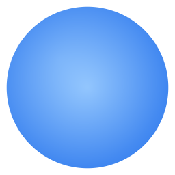

沒有視窗,沒有背景,沒有廢話。
免費 · 開源 MIT · 不用帳號 · 不連網 · Windows x64
點兩下就開,不用裝 Node.js
螢幕中央冒出一個輸入框
文字上牆、圖片上牆、便籤板上牆
滾輪縮放、點一下調樣式,然後繼續工作
整層滑鼠穿透、不佔工作列。滑鼠不在便籤上時,它完全不存在,點擊打字都不會被擋。
Win+Shift+S 截圖 → Ctrl+Shift+V 貼上。參考圖、分鏡、聊天記錄,釘在眼前。
關掉再開都還在;自動留最近 30 個版本,Ctrl+Z 回退,誤刪誤清都救得回來。
MIT 開源。沒有帳號、沒有訂閱、沒有雲端,你的便籤只存在你的電腦。
你在錄短影片。台詞記不住,提詞 app 又是一個大視窗擋在那邊。
你按 Ctrl+Shift+Space,打兩行台詞,按 Enter。台詞就浮在鏡頭旁邊——完全去背,只有字。
拖到順眼的位置,拉大,加個黑底。錄完右鍵,字消失。
然後你會發現自己開始拿它記待辦、堆靈感——打 #今天要做 開一塊板,
便籤拖進去自動排成清單。字幕工具用著用著,就變成你的筆記牆。
輸入框打 #標題 就生一塊板。散落的便籤拖進去排成清單、拖出來放生; 拖標題列整組搬家,點 ▾ 摺成一條,顏色就是你的分類。 滾輪在標題列上滾,整板一起縮放。
| Ctrl+Shift+Space | 冒出輸入框:打字是文字,貼網址是圖片,#開頭是便籤板 |
| Ctrl+Shift+V | 把剪貼簿裡的圖直接釘上螢幕 |
| Ctrl+Shift+X | 一鍵清空全部(清錯了 Ctrl+Z 救回來) |
| Ctrl+Shift+↑ | 置頂開關:釘在最前面 ↔ 放開讓它被蓋住 |
| Ctrl+Z | 復原(Ctrl+Shift+Z 取消復原);更舊的版本在托盤選單裡挑 |
按住拖曳移動;滾輪懸停在上面直接縮放,或拉右下角小方塊。
右鍵一下就刪(手滑 Ctrl+Z);按住 Alt 拖出一個分身,整塊板也能複製。
點一下浮出工具列:7 種顏色、粗細、陰影、底色,還能存模板。
黑字配白影、白字配黑影,壓在花背景上永遠看得清楚。
點圖片貼新網址按 Enter,位置大小都不變。
雙擊文字原地重打;板子標題也一樣,雙擊改名。
台詞釘在鏡頭旁邊當提詞,分鏡截圖貼旁邊對照,錄完右鍵清場。
待辦開一塊板、靈感隨手釘,關掉再開都還在,不用多開一個筆記 app。
重點字卡常駐畫面最上層,觀眾看得到,你的滑鼠完全不受影響。
git clone https://github.com/Jeffrey0117/lanpai-overlay.git cd lanpai-overlay npm install npm start
開起來之後螢幕上什麼都不會出現——這是正常的。看右下角工作列,藍色小圓點就在那待命。
不用註冊、不用 API Key、不用學。下載,按 Ctrl+Shift+Space,開始。